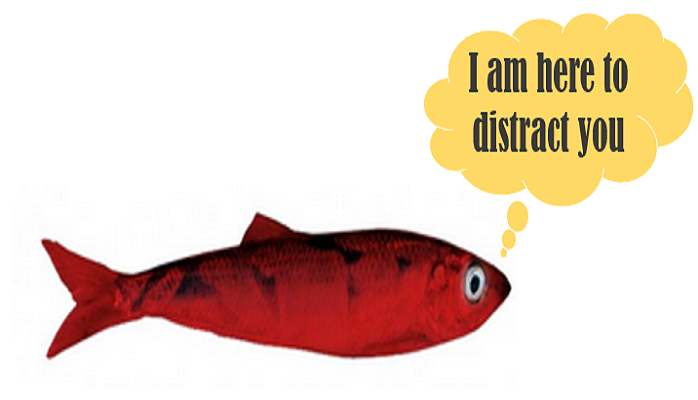

Figure 1. Red herrings are there to distract you.
-
A logical/informal fallacy (or literary device in mystery fiction) leading the audience to a false conclusion.
-
Similar to straw man which distorts the other’s position, the red herring seems plausible yet irrelevant; a diversionary tactic.
-
-
It can happen intentionally (rhetorical strategy in politics) or unintentionally.
-
Origin: Using a strong-smelling smoked fish to divert and distract hounds from chasing a rabbit.
Example
"I think we should make the academic requirements stricter for students. I recommend you support this because we are in a budget crisis, and we do not want our salaries affected." The second sentence, though used to support the first sentence, does not address that topic.